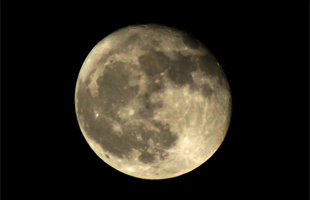

- Dünya'nın yerçekimi haritası bozuldu
- 2.7 milyon fotoğraflık Gök Atlas'ı
- Dünya'nın dışına yolculuk
- Satürn'ün uydusunda buz volkanı
- Nükleer saat fizikte çığır açacak
- Vesta'da olağandışı parlaklık tespit edildi
- Geceleri çalışan güneş enerjisi santrali
- Türkiye'nin Bilim ve Teknolojideki en önemli eksiği: Yetişmiş Bilim İnsanları
- In Time (Zamana Karşı)
- Türkiye'nin Teknolojiye bakışı